今天讲两招加速：少搬资料、不重算
模型训练好之后，生成时间花在哪里、怎么省：Flash Attention 减少搬运，KV Cache 把算过的 key 和 value 存起来。
官方课件 inference.pdf 课件 55 页，多数为图 · 两段影片 · 本页约 25 分钟
- 影片 1（50 分）讲 Flash Attention，影片 2（39 分）讲 KV Cache 和让它变小的一系列方法。
- 这讲预设你已经清楚 Transformer 和 self-attention 的运作；课件第 2 页给了预习影片。
- 课件多数页只有图，本页把关键页按原样截图，标「原图 N」；第 55 页总表另外逐格转成「原表 1」。
- 中间有一个 KV Cache 模拟器，最后 6 道小测。
生成分两段：Prefill 读进整段输入，Decode 一次接一个 token
这讲不讲训练，只讲模型训练好之后，怎么加快生成（推论，inference）的速度（影片 1 00:00）。
先备知识：课件第 2 页只写了「先備知識」和一个影片链接（链接见文末延伸资料），本讲假设你已经知道 Transformer 怎么运作。
讲者先复习：语言模型做的是文字接龙，给它一个未完成的句子，它预测下一个 token。它背后多半是 Transformer：有很多层，每层都有 self-attention，让模型能考虑整个输入序列。输入一排向量 x1 到 x5，输出 O1 到 O5；x1 到 x5 每个都分别乘上 3 个不同的矩阵，变成 query、key、value 三个向量（影片 1 01:01–02:01）。
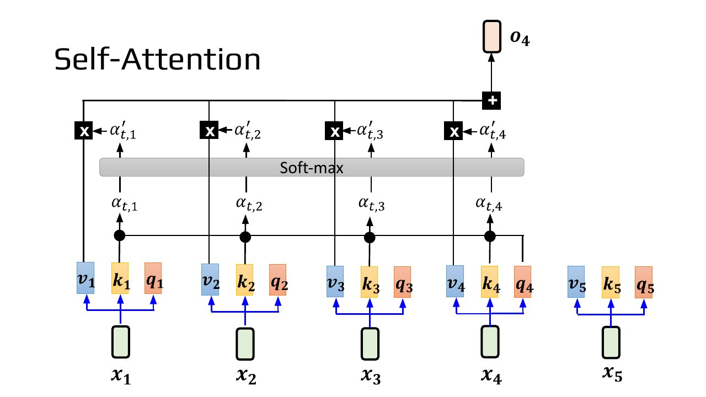
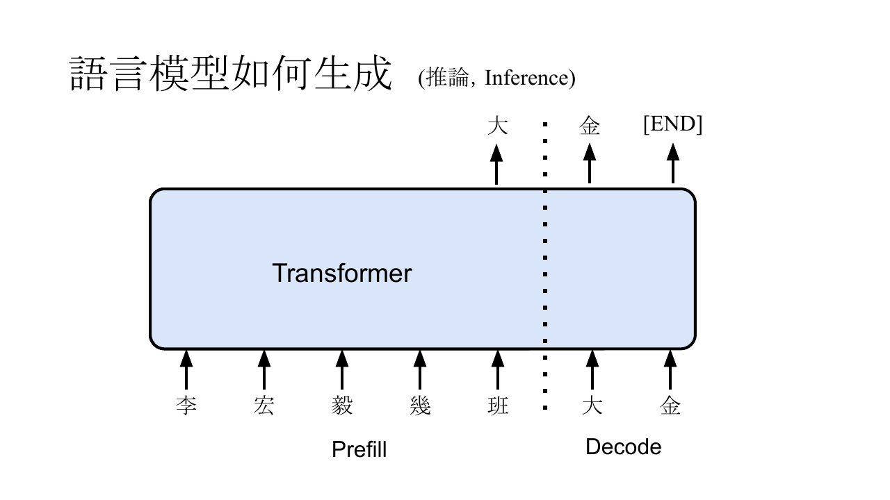
加快推论速度的三个经典方法：Flash Attention、KV Cache、Speculative Decoding；今天讲前两个。讲者说你多数时候其实已经用到第一招，只是不知道它怎么算（影片 1 05:01）。
第三招很有效，但过去讲过，这堂课不讲，课件第 7 页只放了一个旧影片的链接；讲者口述说，可以在 2024 年《生成式 AI 导论》第 16 讲找到 Speculative Decoding 的教学。讲者提醒，作业里也有 Speculative Decoding，做作业时还是要知道它是什么（影片 1 05:01）。
讲者说，看任何加速方法都要先问「代价是什么」：往往是拿一种你比较不关心的资源，去换 Transformer 的加速（影片 1 03:01–04:02）。常见的两种代价：改变 self-attention 的计算（变成近似），或绑定模型、要训练特定的模型才能用（影片 1 04:02）。两种都没有时，可能还付出了其他代价；课件最后的总表就是照这两项加上其他代价来比较。
本节对应课件：p1 p2 p3 p4 p5 p6 p7 · 影片：影片 1 vXb2QYOUzl4（Flash Attention） · 影片 2 fDQaadKysSA（KV Cache）
瓶颈常在仓库和工作台之间搬资料
Flash Attention 来自 2022 年的论文（arXiv 2205.14135），讲者笑称是「上古时代的技术」。它不改变 attention 的计算结果，不是近似；也随插即用，可以套到任何用 self-attention 的 Transformer（影片 1 06:01）。
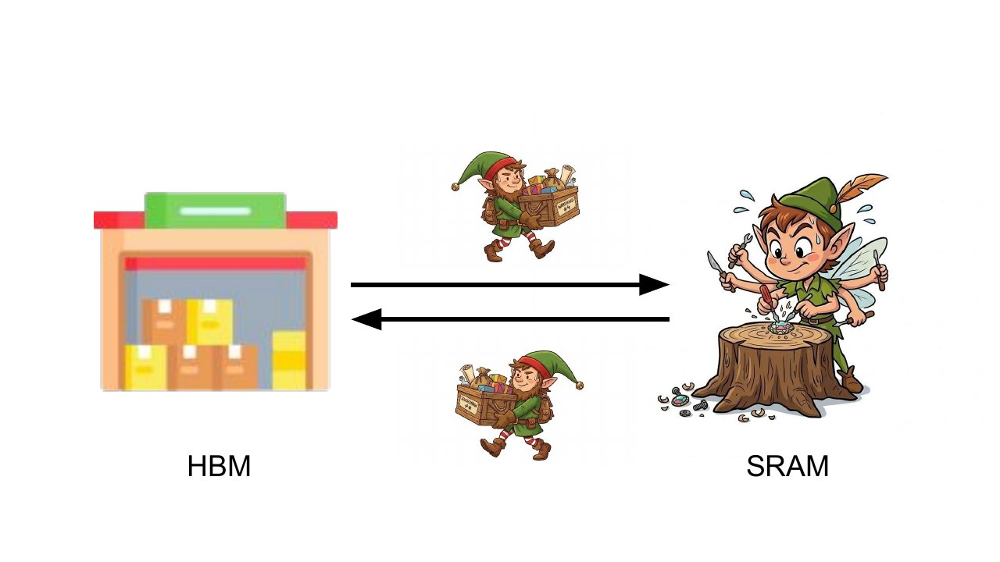
搬資料是花時間的 搬資料是拖慢運算的瓶頸
李宏毅，影片 1 09:01影片 1 09:01
讲者声明：这是为了好懂的简化说法，不精确，也不只适用于 GPU，很多高速运算都有类似概念（影片 1 07:03）。
一般的 attention：为了好懂，讲者假设只考虑一个 query（实际 GPU 会同时处理多个 query，助教的例子也用多个，可以类推）。query 要和一整排 key 做点积，但 key 太多放不上工作台，只能把长度 L 的序列切成一个个 chunk（每个 N 个 key）读上来；chunk 多大取决于工作台多大，工作台大就切大一点，小就切小一点。算完再把点积结果放回仓库。Agent 的输入往往上万、10 万到百万 token（影片 1 10:00–12:00）。
实作上，softmax 会先把每个 a 减掉所有 a 里最大的 Amax 再取 exponential，避免数值 overflow，让指数项最大就是 0（影片 1 13:01–14:00）。
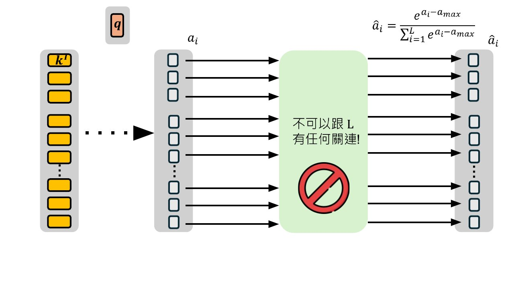
直接实作先找 Amax：每个 chunk 找出最大值 D，和前面存的 D 比，留下大的；总共做 B 次，B 是 L 除以 chunk 大小 N。做完最后一个 chunk，D 就是 Amax（影片 1 16:01–17:02）。
有了 Amax，再一次一个 chunk 算出分子 exp(a − Amax)，叫 a′，再把 a′ 一块块加进 S 得到分母；然后再读一遍算出 â（影片 1 18:02–20:03）。
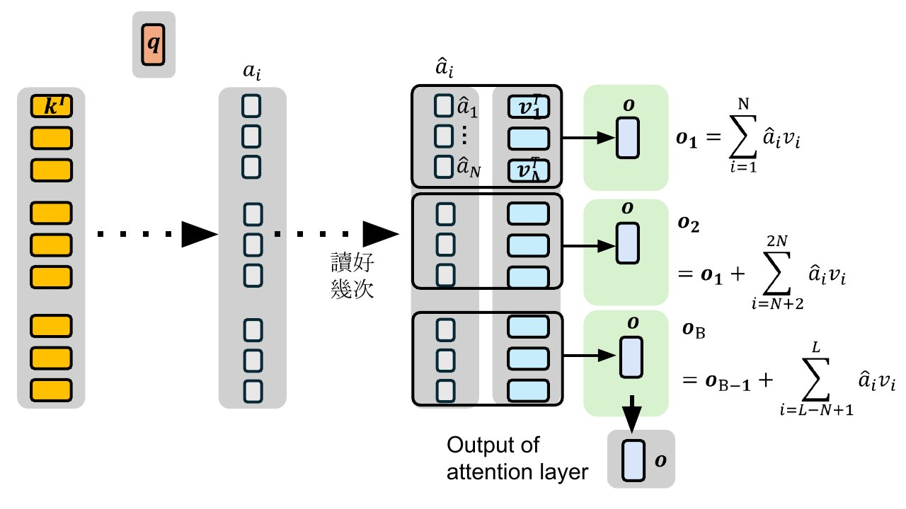
本节对应课件：p8 p9 p10 p11 p12 p13 p14 p15 p16 p17 · 影片：影片 1 vXb2QYOUzl4（Flash Attention） · 影片 2 fDQaadKysSA（KV Cache）
不知道最大值怎么办？先假设，看到更大的再修正
简化版的目标：A_i 只读一次进来，就同时算出 Amax 和分母那一项 summation。原本必须分两遍读，是因为 summation 要依赖 Amax，没找出 Amax 就没法算（影片 1 21:00–22:04）。做法：读进第一个 chunk，先把这块的最大值 D1 当成 Amax，算出 S1。如果 D1 真的是 Amax 就没事，但实际上通常不是（影片 1 22:04–23:00）。
读进第二个 chunk，和 D1 比大小，假设找到更大的 D2（就算没找到、D1 等于 D2，也不影响后面的计算结果）。S1 是假设 D1 为 Amax 算的，已经错了；但不能回头把第一个 chunk 再读进来重算，那就是浪费读写时间（影片 1 24:02–25:00）。
修法：S1 乘上 exp(D1 − D2)。代进去后 exp(−D1) 和 exp(D1) 互相消掉，就好像一开始就拿 D2 当 Amax 算出 1 到 2N 的总和。讲者说这是整个方法核心的技巧（影片 1 26:00–27:01）。
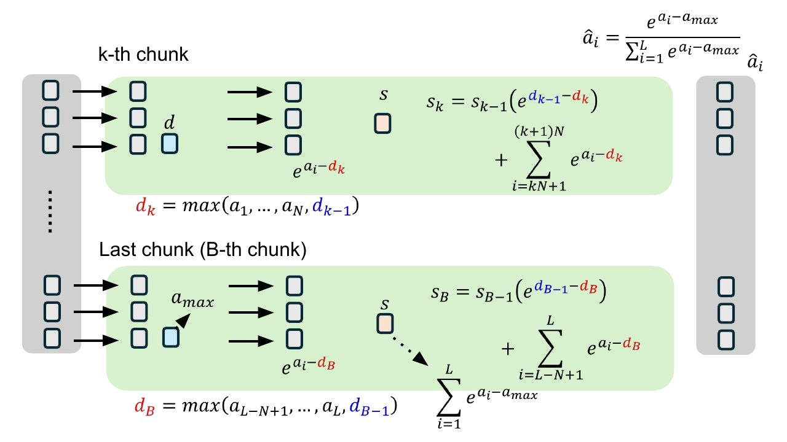
# 补充：一个 chunk 一个 chunk 读（照课件简化版整理的示意：只修正 D 和 S，不含 O 的累积修正）
D = 目前见过的最大值；S = 目前的分母
for 第 k 个 chunk:
D_new = max(D, 这个 chunk 的最大值)
S = S * exp(D - D_new) # 修正旧的分母
S = S + Σ exp(A_i - D_new)
D = D_new
# 读到最后一个 chunk，D 就是 Amax，S 也对了有了 D 和 S，再读一遍 a 就能算出 â，算 â 的过程从原来的多次读写变成两次（影片 1 30:00）。
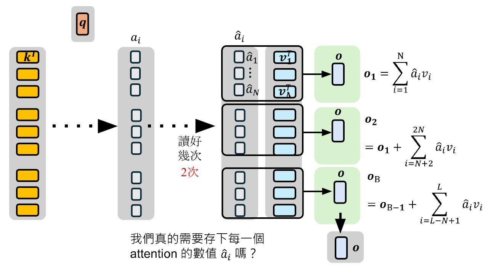
本节对应课件：p18 p19 p20 p21 p22 p23 p24 · 影片：影片 1 vXb2QYOUzl4（Flash Attention） · 影片 2 fDQaadKysSA（KV Cache）
直接累积输出，注意力权重从不存下
Flash Attention 的「灵魂拷问」：一定要先算出 attention weight，才能算最后的加权和 O 吗？它跳过算出 â 这一步，直接得到 O；所以用了它，你读不出 attention 的 weight：很多人分析 Transformer 时想画 attention matrix，如果计算方式选了 Flash Attention、又用 Hugging Face 的模组，它会报错，提示读不到 attention weight（影片 1 31:01–32:00）。
第一个 chunk：读 K 的同时把 V 也读进来，用还不对的权重 exp(a − D1)/S1 先算出 O1，将错就错（影片 1 33:00）。这个权重分子分母都错：分子错在 D1 不是真正的 Amax；分母 S1 错在两处：一是只加了第一个 chunk 的范围，还没加整个序列；二是里面用到的 Amax（D1）也不对。它却被当成分母来用（影片 1 33:00–34:00）。读进第二个 chunk，算出到目前为止最大的 D2，像简化版一样先修补 S1，再加上 exp(a − D2) 得到 S2。讲者说，对真正的 Flash Attention 来说，S 最后对不对已经不重要，它在意的是最后能不能把 O 算对；S2 仍不一定是正确的分母，但比 S1 更正确一点（影片 1 34:00–35:02）。第二个 chunk：O1 乘上 S1 再除以 S2、乘上 exp(D1 − D2)，把差异补平，再加上本块的加权和（影片 1 35:02–37:05）。
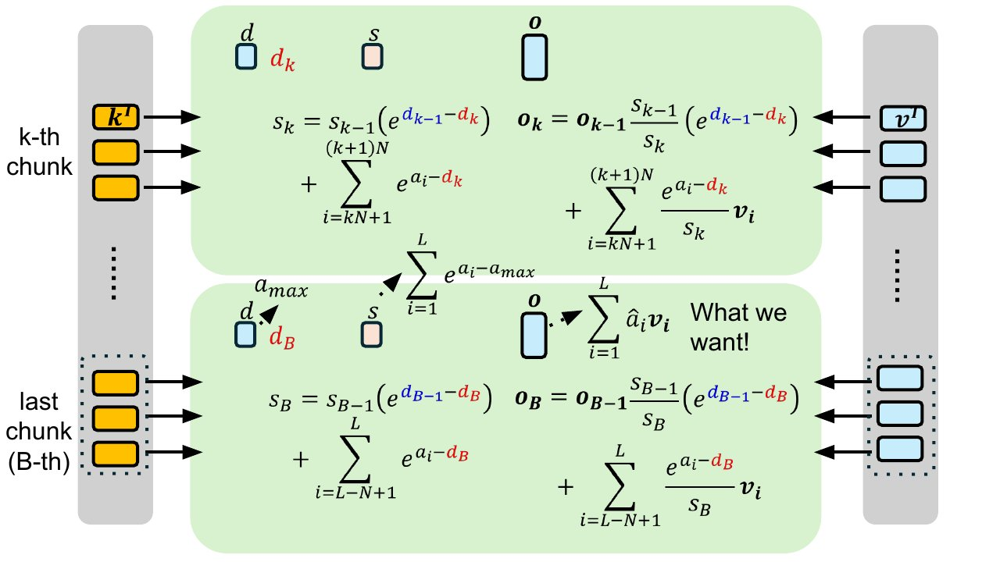
本节对应课件：p25 p26 p27 · 影片：影片 1 vXb2QYOUzl4（Flash Attention） · 影片 2 fDQaadKysSA（KV Cache）
随机 QKV 的小测试：结果几乎一样，序列 4096 时快约 9 倍；整个模型上要序列够长才明显
课件第 28 页给了 Colab 范例程式。讲者用 A100（仓库 80GB，工作台通常只有十几 MB），比较两种 attention：没用 Flash Attention 的叫 Naive Attention，就是直觉上的一般算法。两者背后都呼叫 PyTorch 的 scaled_dot_product_attention，只是设定不同（Naive 设成 math）；如果不特别设定，它预设就用 Flash Attention，所以你平常跑 Transformer 往往已经在用它了（影片 1 40:01–41:00）。
两个函式都吃 Q、K、V，causal 的意思是语言模型只看前面的东西，不是双向的 attention（影片 1 41:00）。参数：B 是 batch size、H 是 attention head 数、L 是序列长度、D 是 Q、K、V 向量的维度，分别设 4、8、256、64；讲者说 256 其实太短。Q、K、V 是随机初始化的，不绑定任何语言模型，因为这里只在意计算速度（影片 1 42:01）。
先验证数值：两种输出最大差异约 10 的负 7 次方，不同运算机制总会有一点点差异，但非常小（影片 1 43:00）。再测时间：benchmark 函式先 warm up 跑一次（不知道 Colab 背后 GPU 怎么调度，先让它载入需要的 library），再把同一种 attention 跑三次计时，以毫秒为单位；讲者说可以跑更多次，结果会更准（影片 1 43:00–44:01）。序列长度从 64、128、256、512 一直到 4096，设为 4096 时加速到约 9 倍（8 到 9 倍）；代价只有演算法复杂、修正时多做一些运算，「瑕不掩瑜」（影片 1 44:01–45:00）。讲者强调这只是拿假的 Q、K、V 做的 toy example（影片 1 45:00）。
接着换成真正的语言模型 Yi-34B，从 Hugging Face 下载；讲者说换别的模型结果也差不多（影片 1 45:00–46:01）。prompt 是把一个无聊的句子重复 100 次的长字串，共 7300 个 token，用 Hugging Face 的 pipeline 呼叫模型（影片 1 46:01）。没用 Flash Attention 的设定叫 eager（attention implementation 设成 eager）；不特别设定时预设就用 Flash Attention，要关掉反而得特别设定（影片 1 47:01）。只让模型输出 1 个 token：没用的花 0.15 秒；换成用 Flash Attention 的 SDPA 设定，也没快多少，因为序列太短，模型里除了 attention 还有大量 feed forward network，文字转 embedding、embedding 转回文字也要时间（影片 1 47:01–48:00）。把句子重复次数改成 1000、约 7 万 token：没用的花 2 秒、有用的 1.3 秒，序列长时才快很多（影片 1 48:00）。
再改成重复 1 万次、约 73 万 token，出现 CUDA out of memory；讲者说爆的是仓库，不是工作台，原因留到下一段 KV Cache 讲（影片 1 49:00）。
本节对应课件：p28 · 影片：影片 1 vXb2QYOUzl4（Flash Attention） · 影片 2 fDQaadKysSA（KV Cache）
每个 token 的 key 和 value 算一次就存下
讲者先说 Cache 的发音和钱的 Cash 一样，它也确实和钱有关（影片 2 00:03）。Prefill 时大批 token 同时进来，每个都要先有自己的 Q、K、V。讲者拿三个 token 举例：第 1 个位置只拿自己的 key 算权重，第 2 个位置看前两个，第 3 个位置看全部三个，各自对能看到的 value 求加权和，得到 O1 到 O3。讲者说，O1、O2、O3 这三份可以同时平行算（影片 2 01:01–02:00）。
K 和 V 被存下来，Q 丢掉，这就是 KV Cache。Decode 时第 4 个 token 进来，如果把前面的 token 接上再丢进模型重算 V 和 K，实在太花时间；所以 q4 直接和存下的 k1 到 k3，加上自己的 k4 算注意力（影片 2 02:00–03:00）。省下的是什么：每个 K、V 都得由输入乘一个矩阵得来，这步运算本身就费时，存起来就不必再做一遍（影片 2 03:00）。
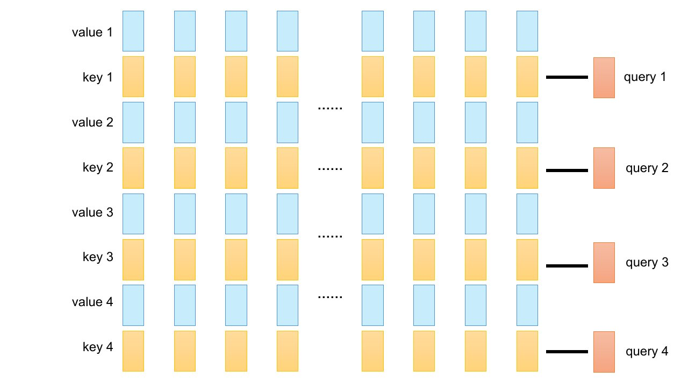
动手：Decode 三步，有无 KV Cache
教学示例：句子「李宏毅几班」取自课件第 3、5 页；步骤是为了练习编的。
本节对应课件：p29 p30 p31 p32 p33 · 影片：影片 1 vXb2QYOUzl4（Flash Attention） · 影片 2 fDQaadKysSA（KV Cache）
KV Cache 用记忆换时间，仓库会被吃光
课件第 34 页只标了 HBM（仓库）和 SRAM（工作台）。讲者口述：每输入或产生一个 token 就要存一组 K 和 V，序列很长就会撑爆；加上 Multi-Head Attention 每层不只一组 V 和 K（影片 2 04:00–05:04）。
估算前提：Gemma 2 的表格写明用了 GQA（Grouped-Query Attention），讲者说后面再讲，这里先无视 GQA、当成一般的 Attention 来算；表上有两个 head 数，也先按一种算（影片 2 05:04–06:00）。所以下面的 0.72MB 和 114k 是「不考虑 GQA」的估算。
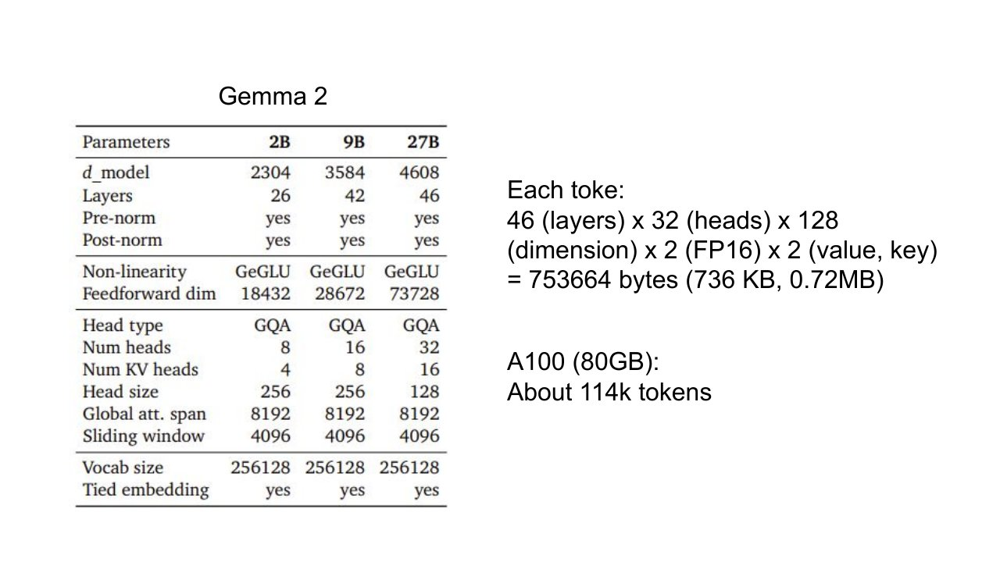
讲者：不到 1 MB 听起来不大，但一张 A100 只够存约 10 万 token，而很多时候需要的上下文远超过 10 万；序列太长就 CUDA out of memory（影片 2 06:00–07:01）。
未确认：讲者口述（字幕）先说「先假设」是 30 个 head，计算时又说每一层有 30 个 head；课件第 35 页写 32；乘积 46 × 32 × 128 × 2 × 2 正好是 736 KB，与 32 一致，所以本页按课件写 32（影片 2 06:00）。
本节对应课件：p34 p35 · 影片：影片 1 vXb2QYOUzl4（Flash Attention） · 影片 2 fDQaadKysSA（KV Cache）
省 KV Cache 的方法：共享、压缩、缩小范围、丢弃
Multi-Query Attention：query 仍有多组，但所有 query 共用同一组 value 和 key，因为只有 V 和 K 会被存下来。讲者说它实际上表现并不好（影片 2 07:01–08:01）。
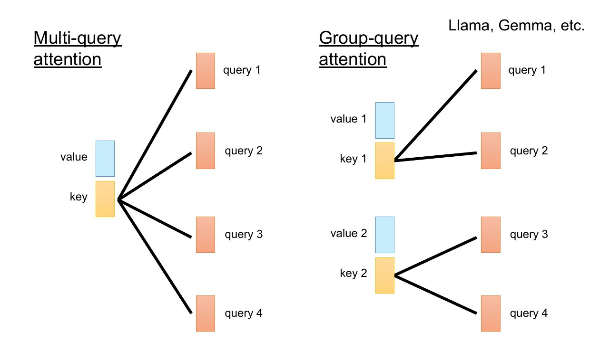
Multi-head Latent Attention（arXiv 2405.04434，DeepSeek 用）：在 x 和多组 V、K 之间放一个 bottleneck，把它们压成一个低维向量 c，仓库里只存 c；这要从训练一开始就教模型（影片 2 10:01–11:01）。未确认：这里按课件总表写「压缩 key 和 value」；讲者口述（字幕）有几处说压缩、还原的是「Query 跟 Key」，同一段又说不要存多组 Value 跟 Key，可能是 ASR 误识别，也可能是口误。
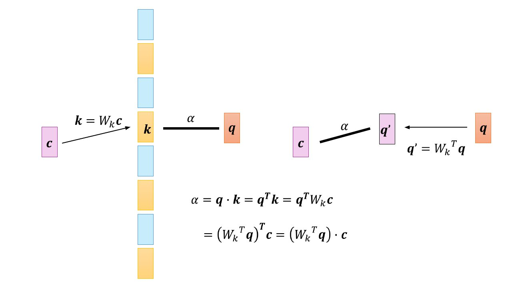
value 那边也一样：O 的加权和可以直接做在压缩过的 c 上，最后再乘 Wv 解压缩一次。讲者说用这个方法，结果甚至还会比原来的 Multi-Head Attention 稍微好一点点（影片 2 15:01–16:02）。
Sliding Window Attention：每次只看前面固定范围（例如 4096），KV Cache 有固定上限。代价是 query 能看的范围变小，模型可能没法考虑很长的序列；讲者说这也许没那么严重：模型有很多层，每一层又多看前面几个位置，看到的范围会一层层扩大；能看多远取决于深度，层数越多看得越远；Mistral 7B 的某个版本用过（影片 2 17:00–18:02）。
另一种省 KV Cache 的做法：把部分层换成 Sliding Window Attention，其余层仍做完整 attention，要存的 K 和 V 就变少。例如 GPT-OSS（讲者说是少数 OpenAI 近年释出的模型）就是一层滑动窗口、一层完整 attention 交替（影片 2 18:02–19:00）。
Streaming LLM 的想法很简单：sliding window 往往让表现变差，序列非常长时尤其明显；但只要 attention 的范围包含整个序列最开头的几个 token，就没事了。而且不需要额外训练：训练时没特别教模型看那几个 token，只要在 inference 时给 sliding window 额外加上最前面几个 token，表现就大增。课件第 46 页的图比较 Dense、Window、StreamingLLM 三种做法在 Llama-2-7B 和 Pythia-12B 上随输入长度变化的 perplexity；讲者说论文在很多不同模型上做了实验，投影片只列其中两个，两个模型上情况很类似：超过 window 的长度时 Window 瞬间变差，StreamingLLM 好很多，还能处理训练时没看过的长度（影片 2 19:00–21:00）。
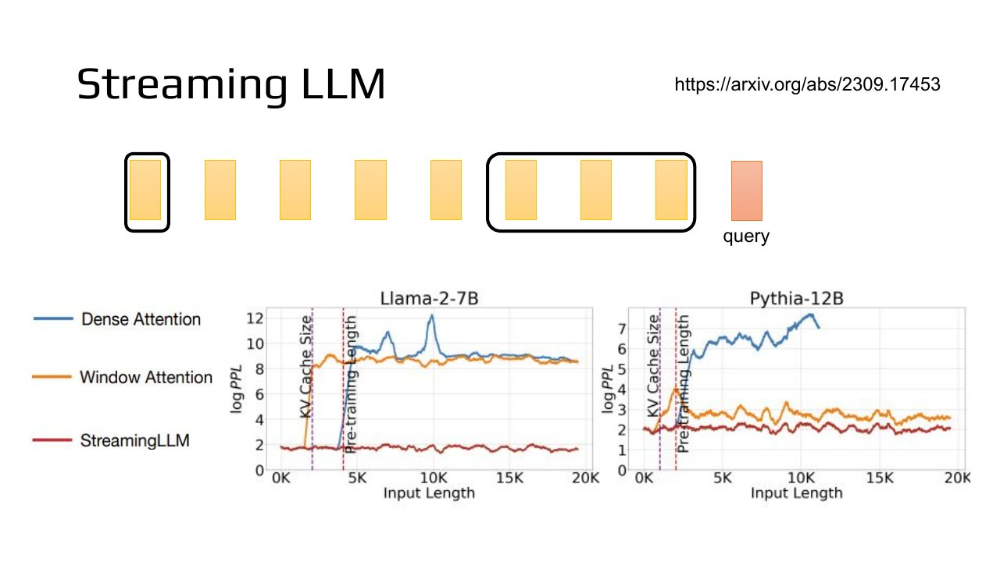
讲者说这一堂课的预修知识是去年秋天《机器学习导论》第三讲，那讲的最后也提到了相关的事：最后三分钟画过多个语言模型的 attention 分布，都偏爱前几个 token（影片 2 21:00）。原因：attention 权重加起来必须是 1，没什么好看的时候，模型预设就看第一个 token；拿掉它，模型的世界瞬间崩坏（影片 2 22:01）。
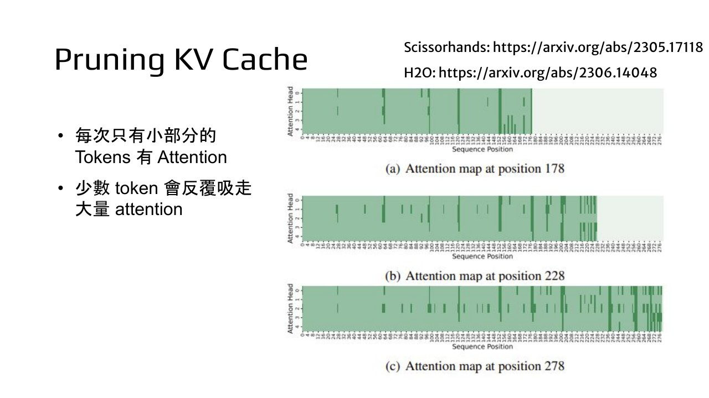
Scissorhands 的结果：论文试了几个不同任务，纵轴是模型表现（accuracy 越大越好，perplexity 越小越好），横轴是压缩量，由少到多；甚至可以压缩 5 倍，也就是只保留 20% 的 token 的 K、V（丢掉 80%），很多任务表现仍差不多（影片 2 25:00）；但后来更多文献指出，让模型做非常难的任务时，随便丢掉 key 和 value，表现还是会变差（影片 2 26:00）。
本节对应课件：p36 p37 p38 p39 p40 p41 p42 p43 p44 p45 p46 p47 p48 · 影片：影片 1 vXb2QYOUzl4（Flash Attention） · 影片 2 fDQaadKysSA（KV Cache）
前缀相同，KV Cache 就能跨对话共用
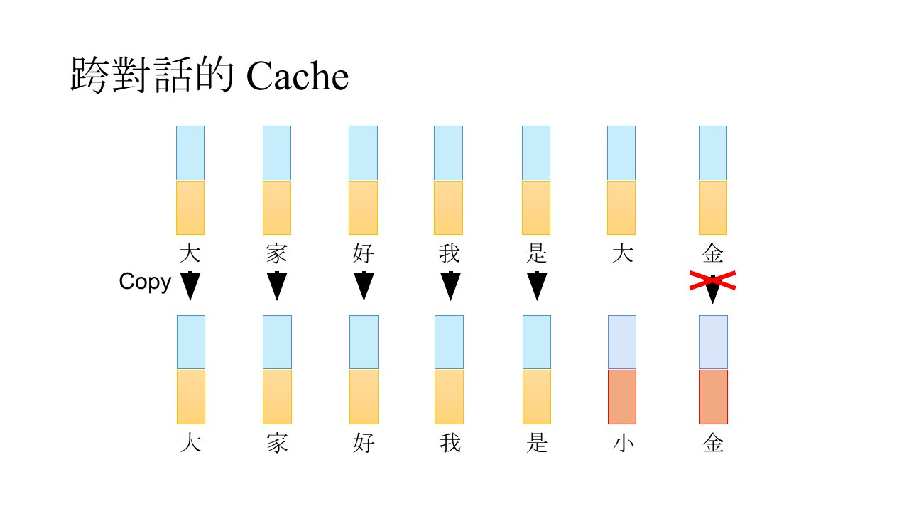
讲者还用 OpenAI 官网的 cache 原理图举了一正一反两个例子：一个 sequence 和 cache 里的只有最后两个 token 不同，前面一大段都能 match，这些 token 的运算打一折；但如果只是在最前面多加一个不同的 token，前缀就变了，整个 cache 被破坏，不算 cache hit，也不能打折。所以只有前缀一样才能打折（影片 2 29:00–30:02）。
ChatGPT、Gemini、Claude、DeepSeek 都有 cache input 折扣。以 GPT-4o 为例，一般输入每一百万 token 收 2.5 美金（长序列 5 美金），cache 到的输入只收十分之一，因为几乎不用额外计算（影片 2 28:00–29:00）。
AI Agent 正好前缀大多一样：第 1 讲说过，你对 Agent 说一句话，它都会在前面附上很长的系统提示词。课件第 51 页写明，system prompt 由自我介绍和自身相关资讯的文字档组成，每次呼叫语言模型都会附上。这段很长，但内容通常不变：放的是这个 agent 的名字、灵魂、存在的目标，长时间都是固定的，所以很可能用上 cache hit（影片 2 30:02）。
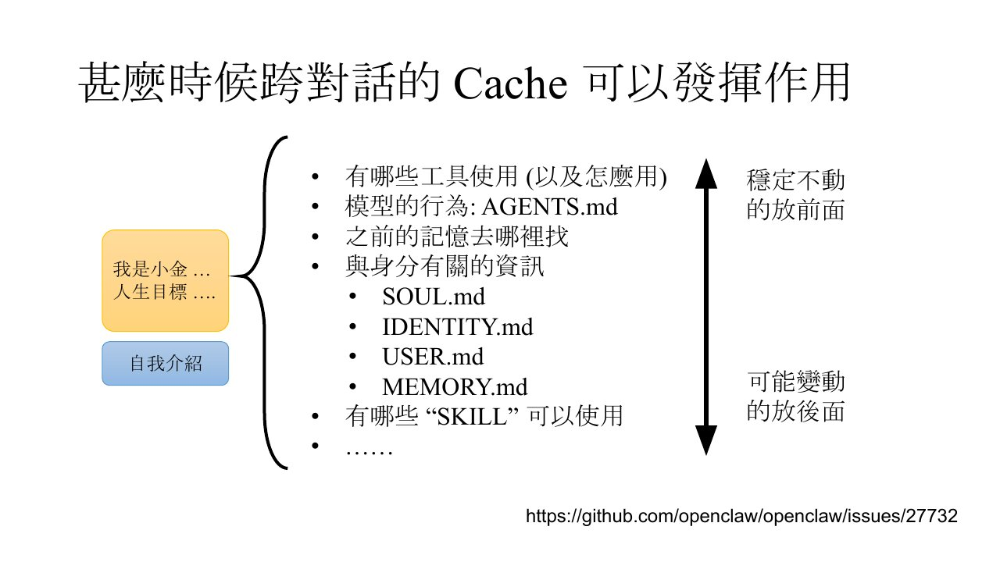
越穩定不動的內容 應該放在越前面 越可能變動的內容 應該放在越後面
李宏毅，影片 2 31:00影片 2 31:00
同一个原则也适用于你自己写的 prompt：「帮我订从台北到波士顿的班机」和「从旧金山到纽约」只共用很短的前缀；改写成「帮我订从 x 到 y 的班机」并把变数放最后，就「可能可以 hit 到比较长的 cache」。讲者也说，就这个例子而言可能没省到多少，但这一段很长时就能累积出比较好的效果；他也说，确实有人在设计自己的 AI agent 时会把这点考虑进去（影片 2 32:02–33:02）。
真的省得到钱吗？课件引了今年 1 月的论文 arXiv 2601.06007 的实测：作者用自己的 AI agent，试了各种 cache input 的方法、多个模型；图里绿色长条代表成本降幅。在某些模型上（例如 Gemini 2.5 Pro 和 GPT-4o），至少能省下 50% 甚至更多（影片 2 33:02–34:00）。
本节对应课件：p49 p50 p51 p52 p53 p54 · 影片：影片 1 vXb2QYOUzl4（Flash Attention） · 影片 2 fDQaadKysSA（KV Cache）
Flash Attention 和 KV Cache 不改注意力、不需训练，其他方法多半要改
| 方法 | 是否改變原有的 Attention | 是否需要訓練模型 | 其他代價 | |
|---|---|---|---|---|
| Flash Attention | 少搬資料 | X | X | 一點額外運算+一點點燒腦 |
| KV Cache | 儲存已經算出來的 key 和 value | X | X | 占用記憶體 |
| Multi-query attention | 多個 query 共享 key 和 value | O | O | 可能明顯傷害模型能力 |
| Group-query attention | 多個 query 共享 key 和 value | O | O | |
| Multi-head Latent Attention | 壓縮 key 和 value | O | O | |
| Sliding Window Attention | 改變 Attention 範圍 | O | ? | |
| Streaming LLM | 改變 Attention 範圍 | O | ? | |
| Pruning KV Cache | 丟棄 key 和 value | O | X | 可能明顯傷害模型能力 |
| Speculative Decoding | 用小模型來預言生成結果 | X (理論上) | X | 小模型還是需要耗費額外算力 |
出处：李宏毅《加快語言模型的生成速度》课件 · 第 55 页
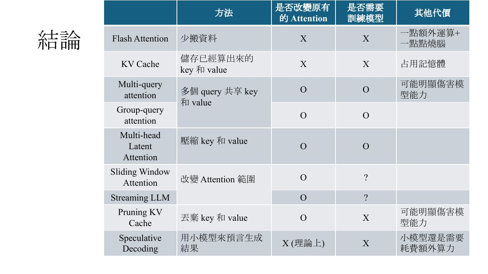
讲者逐行讲这张表（影片 2 34:00–38:02）：
- Flash Attention 的精神是少搬资料：算出来就是原有的 attention，不需要重新训练；唯一的代价是一点额外运算（为了少搬资料必须做修正）和「有一点烧腦」，除此之外没什么代价，讲者说是非常强大的方法（影片 2 34:00）。
- KV Cache 存下已经算出来的 key 和 value：不改变原来的 attention，也不需要重新训练；虽然能加快速度，坏处是占用仓库（影片 2 34:00）。
- Multi-Query、Group-Query Attention 让多个 query 共用同一组 key 和 value，算出来和原来的 attention 不一样，等于简化版的 attention；而且要对模型做客制化训练，没法拿现成模型直接改。尤其 Multi-Query 让所有 query 共用一组，文献上发现会明显伤害模型能力（影片 2 35:02）。
- Multi-Head Latent Attention 压缩 key 和 value，神奇在于不需要多次解压缩；它改变了 attention，也需要训练，但根据文献，这种改变有时反而有利，甚至可能比原来的 attention 表现更好（影片 2 35:02–36:01）。
- Sliding Window Attention 和 Streaming LLM 都改变了 attention 的范围，所以都改变原有的 attention。「需不需要训练」打问号，是因为每篇文献不一样，可以训练也可以不训练：例如训练一个 full attention 的模型，inference 时只做 sliding window；Streaming LLM 原始论文两种都试过，可以拿现成模型只要求它多看最前面的 token，也可以训练时就教它（影片 2 36:01–37:01）。
- Pruning KV Cache 丢掉没用到的 key 和 value，会改变原有的 attention，但通常期待不用重新训练、拿现成模型就能用；做得不好会伤害模型能力，所以最近很多研究在找更好的 pruning（影片 2 37:01）。
- Speculative Decoding 用小模型帮大模型生成，理论上不改变原有的 attention（为什么，作业要大家去读原始论文）；不需要训练，随插即用，可以用任何小模型搭配任何大模型；代价是额外的小模型要耗额外算力（影片 2 37:01–38:02）。
课件里的链接
本节对应课件：p55 · 影片：影片 1 vXb2QYOUzl4（Flash Attention） · 影片 2 fDQaadKysSA（KV Cache）